Habitat
During the breeding season, puffins live either on rocky islands that are dominated by short vegetation or they live on sea cliffs. However, when it isn't the breeding season they spend most of their time at sea with them traveling far from shore. Between the breeding season and the winter season puffins travel hundreds of miles to get to their destination. Puffins mainly stay in the North Atlantic Ocean, with only some going as far south as Morocco or North Carolina outside the breeding season while during the breeding they don't go further south than Northern France or Maine.
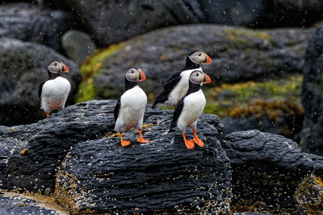
Life-Style
Diet
Puffins' diets are made up of small fish that on average range in size from 2 to 6 inches long. During breeding season they normally stay within 10 miles of the coast when searching for food.
Nesting
Puffins nest on small rocky islands, often along a cliff side. Puffins dig a hole or burrow in the ground to put their nest in unless the area is too rocky, in which case they will use crevices or nest under a boulder. Puffins normally lay only one egg at a time that is incubated between 36 and 45 days. After hatching, the baby takes between 38 and 44 days before they are ready to leave the nest.
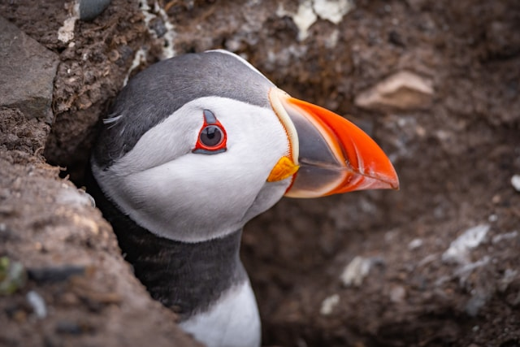
Fun Facts
- A baby puffin is called a puffling
- Puffins can dive up to 200 feet to chase fish
- During the breeding season, Puffins form large colonies that are called 'rafts'
- One nickname for Puffins is Sea Parrots
- The two other members of the Fratercula genus are found in the Pacific ocean
Gallery
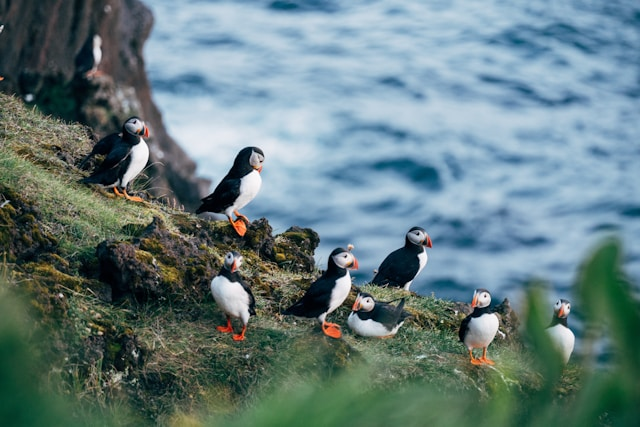
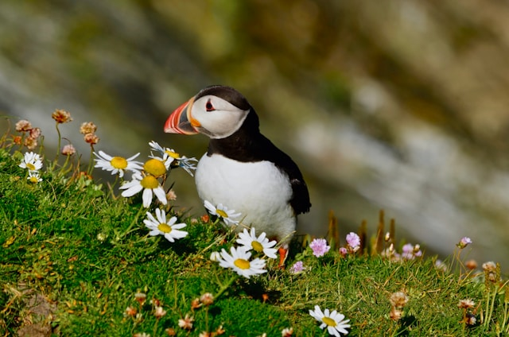
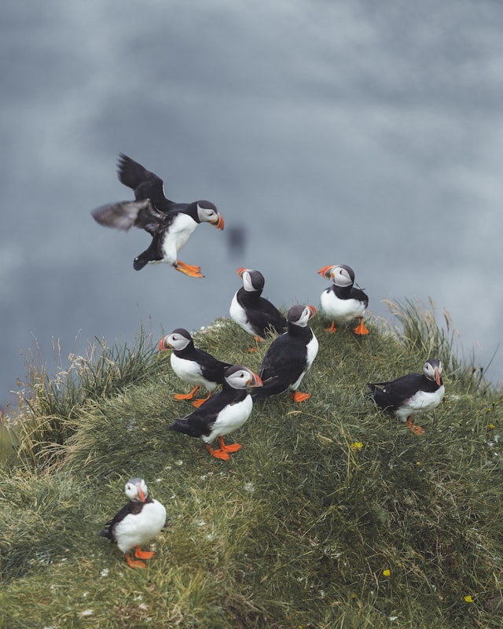
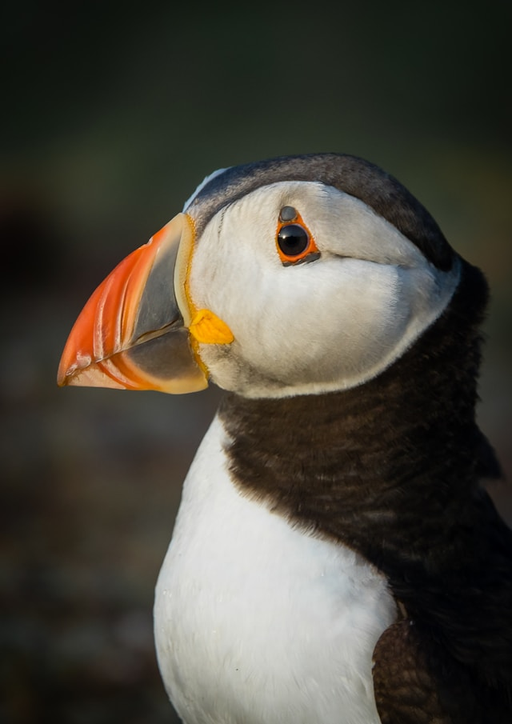
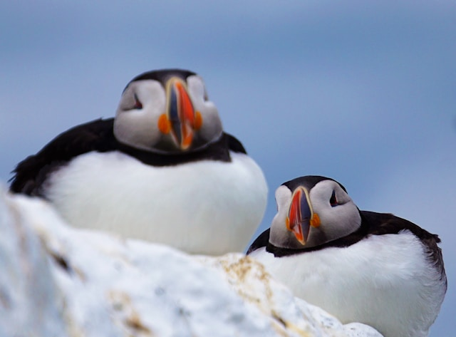
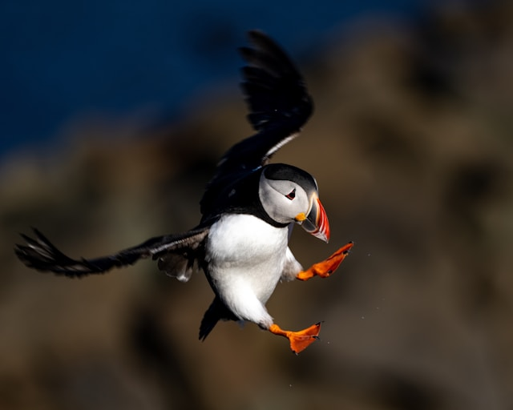
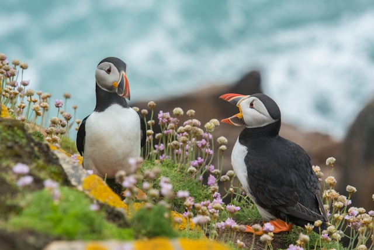
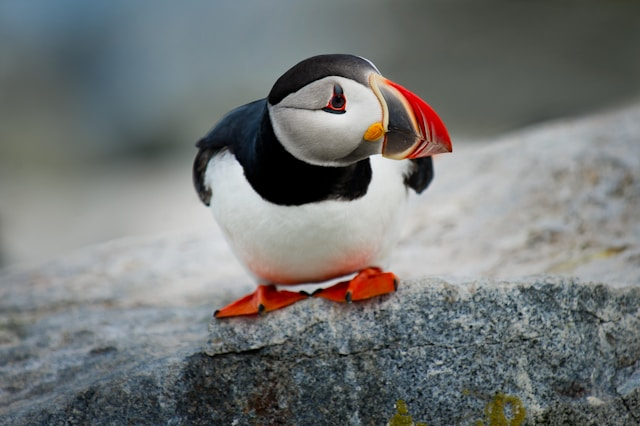
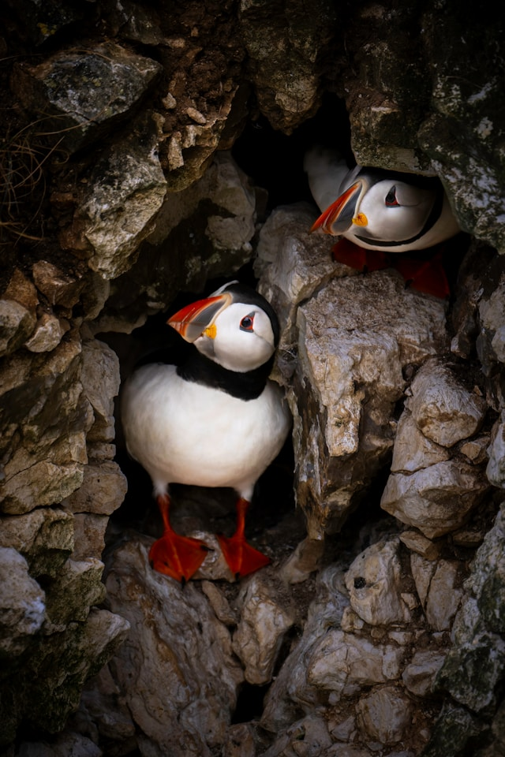
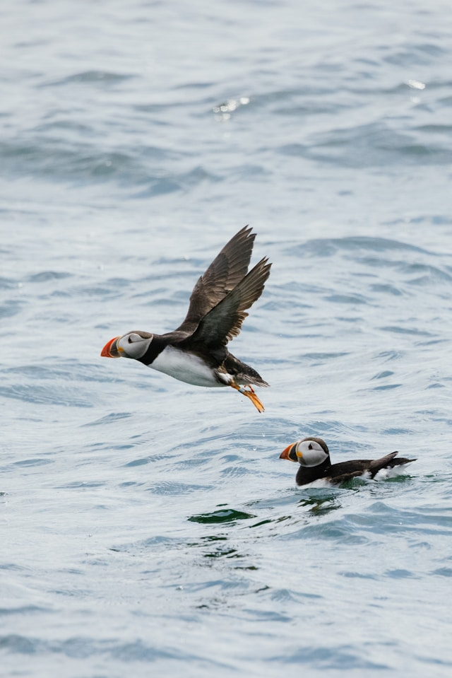
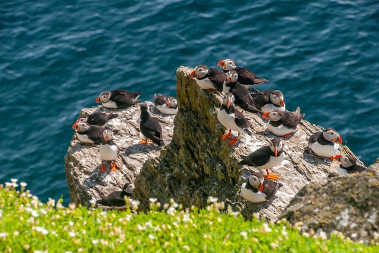
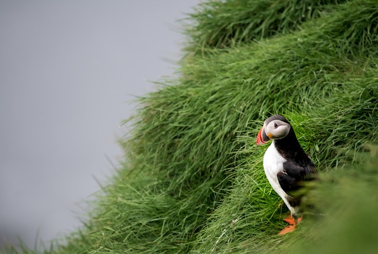
Credits
- All About Birds: Atlantic Puffins
- Exploring Animals: Puffin Facts
- Animals.net Puffins
- All images come from free images on UnSplash